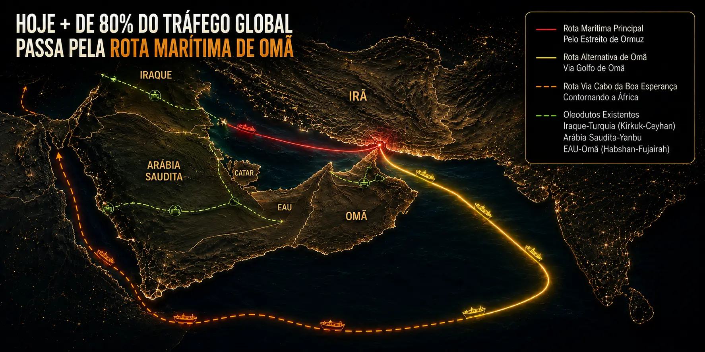
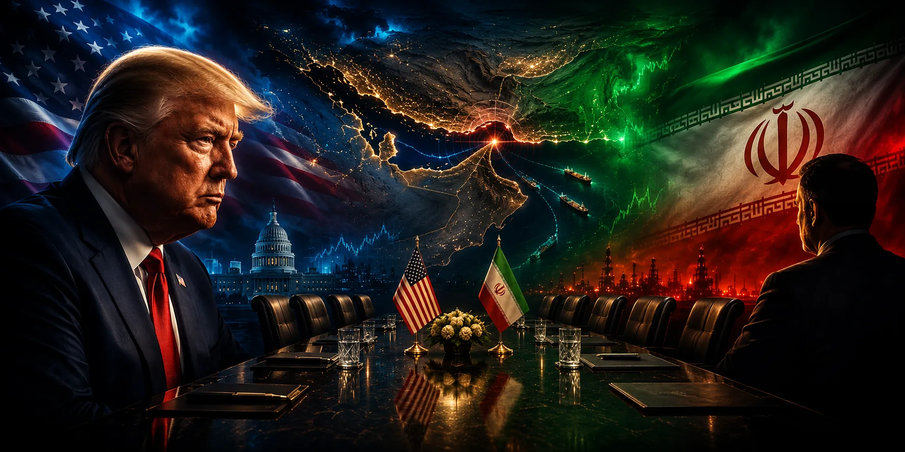
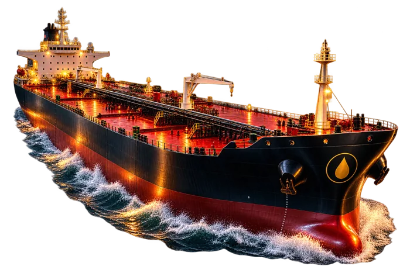

O desvio de US$ bilhões em petróleo
Cobertura completa em português: status, métricas, impacto no comércio global e linha do tempo — a grande história por trás do mercado de petróleo em 2026.
Última atualização: 31 de julho de 2026

Ainda não há atualização automatizada sobre o andamento das negociações diplomáticas.

Gráfico oficial do TradingView, atualizado por eles — mostra a evolução do preço desde antes da guerra até hoje.
Nem todo analista concorda sobre a gravidade real do risco. Vale conhecer os dois lados antes de operar em cima da narrativa mais alarmista do dia.
O estreito é a única rota viável pra ~20% do petróleo mundial. Escaladas militares, minas navais ou ataques a petroleiros — mesmo pontuais — já disparam prêmios de seguro e afastam armadores, reduzindo tráfego mesmo sem bloqueio formal. Historicamente (Guerra dos Petroleiros, anos 80), esse tipo de tensão já durou anos.
Um fechamento total e prolongado é operacionalmente muito difícil: as rotas de navegação mais profundas ficam do lado de Omã, fora do controle direto do Irã, e há uma coalizão naval internacional (EUA, Reino Unido, França, Índia e países do Golfo) na região. Fechar de fato exigiria confrontar essa coalizão — algo que analistas como Anas Alhajji consideram pouco sustentável por muito tempo.
A interrupção afeta principalmente a Ásia: em 2024, cerca de 84% dos carregamentos de petróleo e condensado pelo estreito tinham destino asiático, com a China recebendo um terço de seu petróleo por essa rota. O Japão obtém cerca de 95% do petróleo cru de Arábia Saudita, Kuwait, Emirados Árabes e Catar, e cerca de 70% desse volume passa pelo Ormuz.
Também é uma crise de fertilizantes: cerca de um terço da ureia e 30% da amônia do mundo passam pelo estreito. Analistas estimam alta de 15%–20% nos preços globais de fertilizantes no primeiro semestre de 2026 caso a crise persista — com risco de reduzir plantio e safra de milho nos EUA, com efeito potencial nos preços de alimentos até 2027.
Produtores do Golfo cortaram produção: Iraque caiu 70% em seus principais campos do sul (de 4,3 milhões para 1,3 milhão de barris/dia em março); Arábia Saudita reduziu 20% (de 10 para 8 milhões de barris/dia); vários operadores (QatarEnergy, Kuwait Petroleum, Bapco) declararam força maior.
Nem todos os países sentem uma interrupção do Ormuz da mesma forma. Alguns dependem quase inteiramente do petróleo que passa pelo estreito; outros têm matriz diversificada e sentem pouco o impacto direto.
Estimativa qualitativa baseada em dependência histórica de importação de petróleo do Golfo Pérsico (EIA, IEA). Não é uma métrica oficial única — serve como referência comparativa.
Parte da carga foi desviada para oleodutos: o Oleoduto Leste-Oeste da Arábia Saudita (até o porto de Yanbu, no Mar Vermelho), o Oleoduto de Abu Dhabi (até Fujairah) e o Kirkuk–Ceyhan do Iraque (até a costa do Mediterrâneo, via Turquia). A capacidade combinada é de aproximadamente 9 milhões de barris/dia — bem abaixo dos ~20 milhões de barris/dia que normalmente passam pelo estreito.
Navios que evitam o Ormuz e o Mar Vermelho (também sob bloqueio dos Houthis) precisam contornar a África pelo Cabo da Boa Esperança, adicionando semanas à viagem e elevando custos de frete. O mapa no topo desta página mostra as três rotas lado a lado.
A crise atual não é inédita. Entre 1984 e 1988, durante a Guerra Irã-Iraque, os dois países atacaram diretamente navios petroleiros e mercantes de terceiros países no Golfo Pérsico — episódio que ficou conhecido como "Guerra dos Petroleiros" (Tanker War). Mais de 400 navios foram atingidos no período, e os EUA chegaram a reflagear petroleiros kuwaitianos com bandeira americana e escoltá-los com a Marinha, numa operação batizada de "Earnest Will" — o mesmo tipo de escolta naval que aparece nas notícias mais recentes sobre esta crise.
O paralelo histórico é útil porque mostra dois lados: de um lado, que o Estreito de Ormuz já foi zona de guerra ativa antes e o comércio mundial sobreviveu; de outro, que esses períodos duraram anos, não semanas, e deixaram cicatrizes duradouras nos preços de energia e nos prêmios de seguro marítimo — o mesmo tipo de pressão que vemos hoje nas taxas de seguro de guerra.
O status muda conforme a evolução do conflito — confira o banner no topo desta página, atualizado diariamente. Historicamente o estreito alternou entre fechamento total, bloqueio parcial e reaberturas breves seguidas de novo fechamento.
É a única rota marítima que liga os principais produtores do Golfo Pérsico (Arábia Saudita, Irã, Kuwait, Emirados, Catar) ao oceano aberto. Antes da crise, cerca de 20 milhões de barris de petróleo por dia — entre 20% e 25% do consumo mundial — passavam por ali, além de aproximadamente 20% do comércio global de GNL.
O Brasil não depende do Ormuz para importar petróleo (é autossuficiente via Petrobras), mas o preço do Brent é referência global — alta no Brent pressiona a Petrobras a reajustar combustíveis internamente, e crises geopolíticas desse tipo tendem a fortalecer o dólar globalmente por efeito de aversão a risco, afetando diretamente o câmbio e os contratos futuros de índice e dólar na B3.
Ásia é a região mais exposta: China, Japão, Coreia do Sul e Índia recebem a maior parte do petróleo que passa pelo estreito. O Japão, por exemplo, importa cerca de 95% do petróleo cru de fornecedores do Golfo, com aproximadamente 70% desse volume passando pelo Ormuz.
Sim, mas com capacidade limitada: os oleodutos Leste-Oeste (Arábia Saudita), Abu Dhabi–Fujairah e Kirkuk–Ceyhan (Iraque) somam cerca de 9 milhões de barris/dia — bem abaixo dos ~20 milhões que normalmente passam pelo estreito. Navios que desviam totalmente da região precisam contornar a África pelo Cabo da Boa Esperança, adicionando semanas de viagem.
Diariamente, por uma rotina automatizada que busca as informações mais recentes em fontes jornalísticas primárias (Reuters, Bloomberg, Al Jazeera, S&P Global). Veja a seção de fontes e metodologia abaixo para mais detalhes.
Como este painel é feito: os números e eventos acima vêm de reportagens e relatórios públicos (não de um feed automatizado de dados). O preço do petróleo e outras cotações do Morning Call são automatizados via API; tráfego real de navios (AIS) e prêmios de seguro de guerra não têm API pública gratuita e continuam sendo atualizados manualmente a partir de relatórios como o da S&P Global.
Este conteúdo é uma curadoria independente, escrita a partir de fontes primárias — não é tradução ou cópia de nenhum outro site de monitoramento.